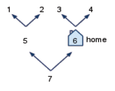

reports
reports  if the is your home, and
if the is your home, and  otherwise.
if the
is a dead-end (i.e. no paths from it).
otherwise.
if the
is a dead-end (i.e. no paths from it).
 follow the left path, returning
a new .
follow the left path, returning
a new .
You’re lost in the forest. Every in the forest is either a dead-end or has exactly 2 one-way paths: left and right. Your goal is to find out if there is a way home. You are presented with four new blocks, two predicates and two reporter blocks (all take a as an argument):
reports
if the is your home, and otherwise.
if the
is a dead-end (i.e. no paths from it).
follow the left path, returning
a new .
It is an error to or
if is a dead-end (because it has no paths!).
There is no way in this forest to follow a sequence of left paths and/or right paths and end up
where you started. I.e., there’s no way to walk in circles. Your home (if one exists) might be at a
dead-end or it might not. You might actually start your search at home.
Write , which uses the four functions above and returns
if you can
get home following a (possibly zero) number of lefts and rights starting from
, and
otherwise. There is a framework for this block under the "Going Home" sprite in the starter file.
As before, make sure you have clicked the green flag before testing your block.
You can write this block entirely with recursion - you won't need HOFs or iteration. Example:
The Road Not Taken
Two roads diverged in a yellow wood,
And sorry I could not travel both
And be one traveler, long I stood
And looked down one as far as I could
To where it bent in the undergrowth;Then took the other, as just as fair,
And having perhaps the better claim,
Because it was grassy and wanted wear;
Though as for that the passing there
Had worn them really about the same,And both that morning equally lay
In leaves no step had trodden black.
Oh, I kept the first for another day!
Yet knowing how way leads on to way,
I doubted if I should ever come back.I shall be telling this with a sigh
Somewhere ages and ages hence:
Two roads diverged in a wood, and I—
I took the one less traveled by,
And that has made all the difference.

home?(7) ==> falsehome?(6) ==> truedead-end?(6) ==> falsedead-end?(3) ==> truego-left(3) ==> ERRORgo-left(7) ==> 5go-right(2) ==> ERRORgo-right(6) ==> 4path-home(7) ==> truepath-home(6) ==> truepath-home(5) ==> false